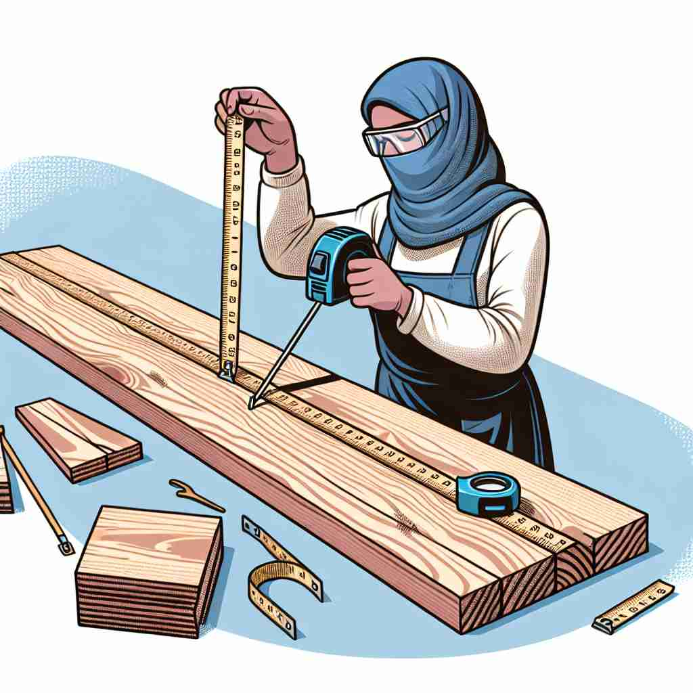

💬 The tailor needs to measure the waist of the mannequin carefully.
💬 The divers use a tool to measure the water temperature.

💬 The chef will measure the flour for the recipe.

💬 She needs to measure the wood before cutting it.
🔈 ['meʒə]
🗝️ v. to find out the size, amount, etc. of something
🖼️ 在一个繁忙的建筑工地上，一位工人正在用卷尺测量一块木板的长度。他仔细地将卷尺的一端对准木板的一侧，拉直后仔细读数。这一场景解释了'measure'作为测量某物尺寸的含义。
🔍 想象你在用尺子测量（measure）不同的东西。无论是物理上的测量、评估成功、采取行动、考虑言辞还是音乐节奏，都可以联想到"测量"这个核心动作。这个概念贯穿了"measure"的各种用法，有助于你更轻松地记忆和理解它的多重含义。
💬 The tailor needs to measure the waist of the mannequin carefully.
💬 The divers use a tool to measure the water temperature.
💬 The chef will measure the flour for the recipe.
💬 She needs to measure the wood before cutting it.
🌳 词根是 'mesur'，源自拉丁语 'mensura'，意为 '测量'。后缀 '-e' 主要用于构成动词或名词形式。整体上，'measure' 意味着测量或评估某事物的大小、数量或程度。
💡 可以将 'measure' 想象成 'meter'（米），一种测量长度的单位，从而联想到与测量有关的含义。结合 'measure' 中的 'measure tape'（卷尺）这种具体物品，也可以帮助记忆该词的意义。
🗝️ n. a way of judging or assessing
🖼️ 在一个大学课堂里，教授正在向学生讲解评估学术表现的方法。他手里拿着一张成绩单，向学生们说明如何根据多种因素来衡量学术成果。这个场景展示了'measure'作为评估方法的含义。
💬 His success is a measure of his hard work.
❓ 通过测量来判断或评估
🗝️ n. an action taken to achieve a particular purpose
🖼️ 在一个公司会议室里，管理层正在制定新的安全措施来提升职员的工作环境。他们讨论并记录下每一个步骤，以确保员工安全。这个场景解释了'measure'作为为实现特定目标所采取的行动的含义。
💬 The government introduced new measures to reduce unemployment.
❓ 为达到目的而采取的"量化"行动
🗝️ n. a certain amount or degree of something
🖼️ 在一个安静的厨房里，厨师正在准备配料。他小心翼翼地用量杯倒出一杯面粉，确保每一份量都精确无误。这个场景体现了'measure'作为一定数量或程度的含义。
💬 Add a measure of salt to the recipe.
❓ 从测量得出的特定数量或程度
🗝️ v. to consider carefully before acting
🖼️ 在一个宁静的公园里，一位年轻人在长椅上沉思。他考虑着职业变动的利弊，思索中不时颔首，象征着他在'measure'所有可能结果前做出决定。
💬 He measured his words carefully before speaking.
❓ 在行动前进行"心理测量"
🗝️ n. the rhythm of a piece of music
🖼️ 在音乐教室里，学生们正在练习一首新的乐曲。指挥轻轻敲击着节拍器，帮助他们把握音乐的节奏。这一场景展示了'measure'作为音乐节奏的含义。
💬 The song is written in 4/4 measure.
❓ 音乐中可测量的节奏单位